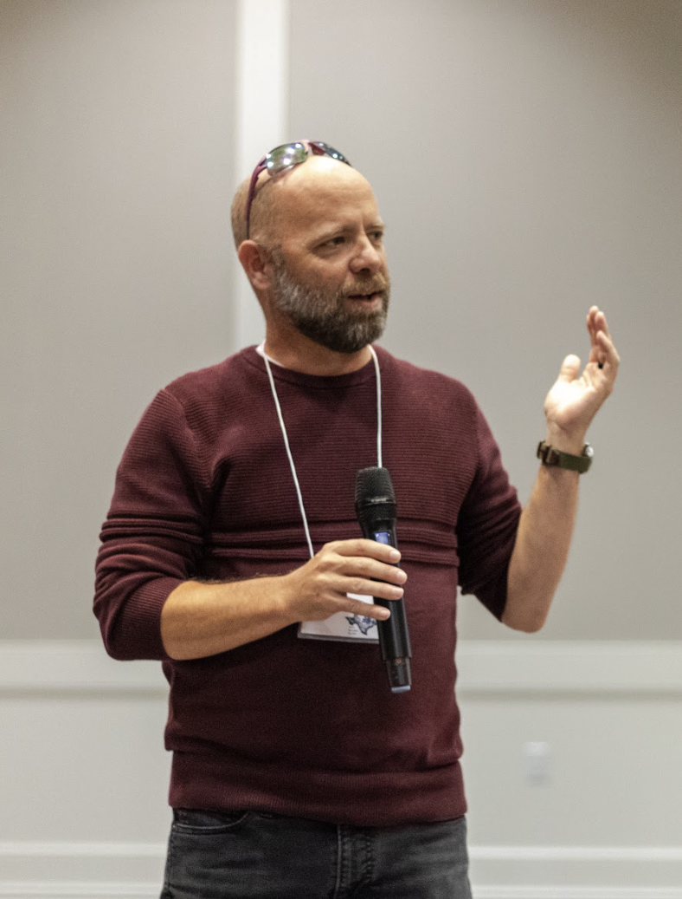

The Blackmon Lab is in the Department of Biology at Texas A&M University. We study how evolution works across the tree of life. A lot of our work centers on genome structure, sex chromosomes, and karyotype evolution, but we also work on morphology, behavior, sexual selection, and the genetic basis of adaptation. Our study organisms range from tomatoes and betta fish to beetles, chickens, crabs, and mammals. We use three general approaches: theoretical population genetics, phylogenetic comparative methods, and genetics/genomics, plus a growing layer of AI agents that let us do comparative work at scales a single lab couldn't handle before.
A core part of the lab is getting undergraduates into fundamental research much earlier than they normally would. AI does the literature search and data extraction; students design the questions, validate the output, and write the papers. Whether we are modeling the spread of chromosomal rearrangements, analyzing patterns of karyotype evolution across thousands of species, or mapping the genetic basis of traits in the lab, the goal is to pull out the rules that govern how evolution works.
Generated using Google NotebookLM from our published research papers.